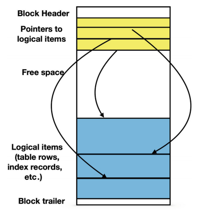
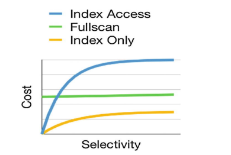
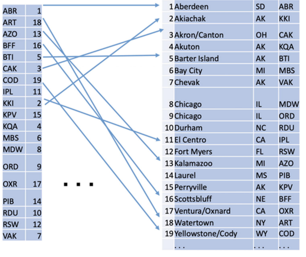
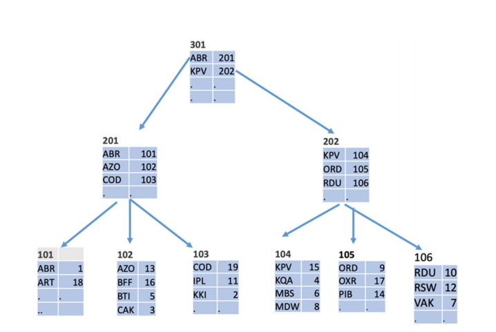
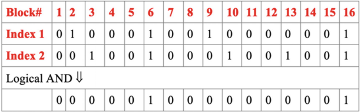
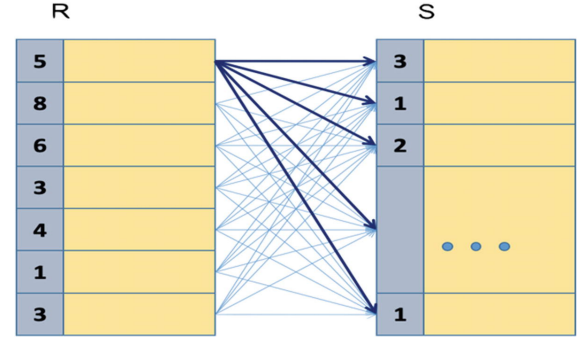
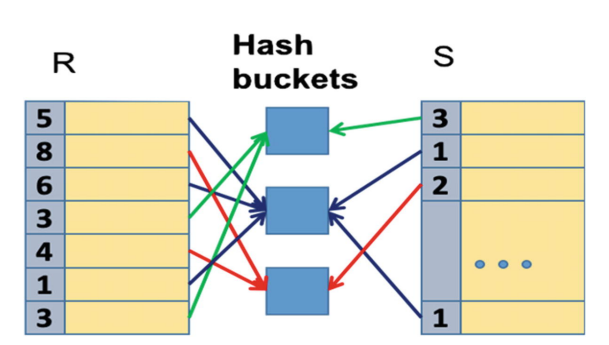

for choosing the best query we need some metrics to show selected Algorithm is appropriate for our query. there is two main factors:
any file use in database is divided into blocks of the same length. postgresql uses 8192 bytes block. a block is the unit which is transfered between hard drive and main memory. the number of i/o access is the number of blocks that we want to read.
here is view of database storage structure
The allocation of items to blocks also depends on the type of the database object. Table rows are stored using a data structure called a heap: a row can be inserted in any block that has sufficient free space, without any specific ordering. Other objects (e.g., indexes) may use blocks differently.
in full scan database engine reads all data from disk and apply filters. here is s simplae pseudocode for this operation
FOR each block IN a_table LOOP
read block;
FOR each row IN block LOOP
IF filter_condition (row)
THEN output (row)
END IF;
END LOOP;
END LOOP;
PostgreSQL allows for building additional, redundant data structures, making data access dramatically faster than a simple sequential read.These additional structures are called indexes.
indexes provide additional data access paths. they allow us to determine what values are stored in the rows of a table without actually reading the table—this is how index-based access works
The algorithm extracts a list of pointers to blocks that contain rows with values satisfying the filtering condition, and only these blocks are read from the table
To get a table row from a pointer, the block containing this row must be read
Note: for small values of selectivity, most likely, all rows satisfying the filtering conditions will be located in different blocks and, consequently, the cost is proportional to the number of result rows. For larger values of selectivity, the number of processed blocks approaches the total number of blocks. In the latter case, the cost becomes higher than the cost of a full scan because resources are needed to access the index.
Data access operations do not necessarily return entire rows. If some columns are not needed for the query, these columns can be skipped as soon as a row passes filtering conditions (if any). More formally, this means that the logical project operation is combined with data access. This combination is especially useful if an index used for filtering contains all columns that are needed for the query
The choice of the best data access algorithm depends mostly on query selectivity.
indexes are redundant data that stores some pointers to actual datas. it effects on performance for fetching data but is essential to know that it slow down modification(insert,update,delete) operations. there is diffrent data structures behind indexes. here is a picture that shows how index work
The most common structure of an index is a B-tree. The structure of a B-tree is shown in following picture
A bitmap is an auxiliary data structure that is used internally in PostgreSQL for several different purposes. Usually a bitmap contains one bit for each block (8192 bytes). The value of the bit is 1 if the block has a property and 0 if it hasn't. following image shows how bitmaps are used to access data through multiple indexes
there is other kind of indexes like hash indexes which is good for equal operator and r-tree for spatial conditions. we will talk about them in later chapters.
There is diffrent combining relations algorithms.
pseudo code:
FOR row1 IN table1 LOOP
FOR row2 IN table2 LOOP
IF match(row1,row2) THEN
INSERT output row
END IF
END LOOP
END LOOP

The output of a natural join consists of pairs of rows from R and S that have equal values on the join attributes. The idea of the hash join algorithm is simple: if the values are equal, then the hash values are also equal.
The basic version of the hash join algorithm includes two phases :
The first phase of the algorithm sorts both input tables in ascending order by the join attribute. When the input tables are properly ordered, the merge phase scans both input tables once
Any of the algorithms can be the best, depending on the circumstances. The nested loop algorithm is more universal and is the best for small index-based joins; a sort-merge and hash are more efficient for large tables, when applicable.